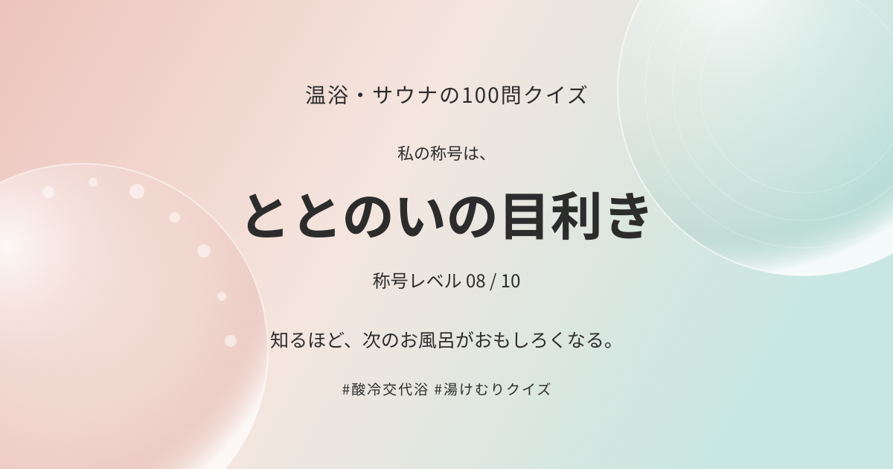

湯けむりクイズの称号 · 8 / 10
ととのいの目利き

知るほど、次のお風呂がおもしろくなる。
あなたは、どの称号に出会うだろう。
このページは称号の共通シェアカードです。個人の回答履歴や得点は保存していません。回答数・正答率・途中／完走の区別は、シェアした投稿文をご覧ください。称号はクイズ上の遊びで、資格や医学的知識を認定するものではありません。
湯けむりクイズの称号 · 8 / 10

知るほど、次のお風呂がおもしろくなる。
あなたは、どの称号に出会うだろう。
このページは称号の共通シェアカードです。個人の回答履歴や得点は保存していません。回答数・正答率・途中／完走の区別は、シェアした投稿文をご覧ください。称号はクイズ上の遊びで、資格や医学的知識を認定するものではありません。